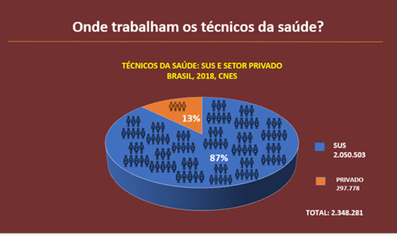
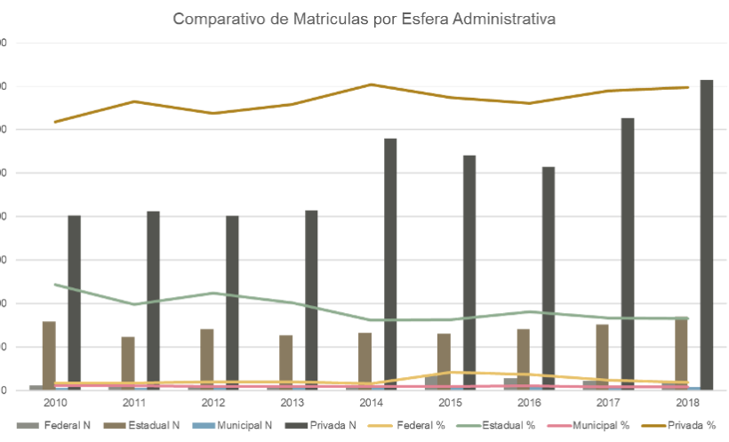

Atualmente os trabalhadores técnicos representam mais de oitenta por cento do contingente total de
trabalhadores em saúde no Brasil. Eles estão presentes em diversas categorias profissionais, em
diferentes modalidades de assistência à saúde, nas equipes de estudos e pesquisas voltadas para a
produção da ciência. No entanto, historicamente, esse grupo de profissionais vem experimentando
políticas de qualificação, quando elas existem, que não consideram suas reivindicações específicas
por processos de formação, regulamentação e reconhecimento profissional. A falta dessas políticas
acabam por pesar sobre suas trajetórias de vida, impactando os lugares sociais que ocupam dentro das
equipes de trabalho e subalternizando suas práticas e seus saberes.
Essa realidade se reproduz também em outros campos de conhecimento, como o da história, uma vez que
ainda são poucos os estudos e pesquisas que se dedicam à memória do trabalho e dos trabalhadores
técnicos da saúde. Quando pensamos em uma instituição como a Fiocruz, no valor histórico de sua
gênese para a ciência e a saúde pública no Brasil, é quase imediato lembrar de nomes como Oswaldo
Cruz, Carlos Chagas ou Adolpho Lutz. Mas quase ninguém ouviu falar dos auxiliares de laboratório,
trabalhadores que atuaram lado a lado com os cientistas participando ativamente dos processos de
criação e desenvolvimento das pesquisas, ensino e produção de medicamentos e insumos.
Nas primeiras décadas da República, os auxiliares de laboratório, em sua grande maioria autodidatas,
aliaram seus saberes vivenciais aos aprendizados técnicos adquiridos no cotidiano da ciência
experimental para reinventar e inovar métodos e técnicas. Entretanto, as questões estruturais
próprias da sociedade brasileira, como o racismo, a hierarquização de saberes e a divisão de classe,
colaboraram para reproduzir uma divisão social que limitou o reconhecimento destes profissionais.
História em Imagem
Sala de preparo de meio de cultura no Pavilhão
Mourisco - Acervo Casa de Oswaldo Cruz/Fiocruz. Sem data. Autor: J.Pinto
A fotografia exibe a Seção Auxiliar de Preparos e Meios de Cultura, cujo trabalho
atendia a todos os laboratórios do antigo Instituto Oswaldo Cruz, atual Fiocruz.
Esta seção era responsável por produzir substâncias que possibilitavam a criação de
ambientes in vitro para o crescimento de micro-organismos.
(…) observamos em primeiro plano, uma torneira, fora de foco, pertencente ao sistema
hidráulico, capaz de produzir água destilada. No fundo da sala, à esquerda, por trás
da vidraria, estão dois auxiliares da seção.
O que está mais à frente, de bigode, olha diretamente para a lente do fotógrafo. Seu
olhar fixo atrai o nosso, de espectadores, e parece chamar a nossa atenção para a
sua forte presença e importância do seu trabalho, que se sobrepõe ao aparato técnico
e tecnológico localizado à sua frente; este último de grande importância e orgulho
para os cientistas (REIS, 2018). Atuando como protagonistas de suas histórias, os
antigos auxiliares de laboratório da Fiocruz buscaram trilhar caminhos, transitando
através dos meandros de uma hegemonia cultural da instituição, onde o cientista era
o soberano. Assim, foram capazes de criar redes de sociabilidade construindo sólidas
relações de solidariedade e cooperação entre si, que não se restringiram ao ambiente
de trabalho, tais como esporte, lazer e espiritualidade.
Renata Reis
Para saber mais sobre as muitas histórias dos trabalhadores técnicos da Fiocruz,
acesse a exposição virtual de longa duração Manguinhos de Muitas Memórias -
www.expomemorias.epsjv.fiocruz.br
O SUS e uma nova proposta para o Trabalho e a Educação Profissional em Saúde
Os anos 1980 foram marcados pela virada democrática no país, em que a emergente sociedade civil
pressionou por um processo de abertura política que culminou com a promulgação da nova Constituição
Federal em 1988 e a conquista de importantes direitos sociais. Na área da saúde, a formação de
trabalhadores foi considerada pelo Movimento Sanitário como uma das condições estruturais para a
implementação do Sistema Único de Saúde (SUS).
No início dos anos 1980, do total de trabalhadores em atividade nos estabelecimentos hospitalares no
Brasil, cerca de 35% eram de nível superior e 65% de nível médio e elementar. Os trabalhadores de
nível elementar – que haviam cursado somente as quatro primeiras séries do atual ensino fundamental
– representavam quase 70% desse grupo. Eram um contingente expressivo de trabalhadores incorporados
aos serviços de saúde públicos e privados, com precária ou sem qualificação específica e sem
identidade profissional. Ambos os problemas eram consequência de um modelo de assistência à saúde
que privilegiava, e ainda privilegia, a mercantilização da saúde e a industrialização da doença.
O SUS e uma nova proposta para o Trabalho e a Educação Profissional em Saúde
O projeto da Reforma Sanitária se orientou pela perspectiva de reforma social, envolvendo a
construção de um Estado democrático e a ampliação da visão de saúde de modo a abarcar as condições
de vida e de trabalho, como prática social e não apenas como fenômeno biológico. Do mesmo modo, a
formação profissional dos trabalhadores técnicos de saúde passou a ser entendida como capaz de
contribuir para uma participação crítica e qualificada do/a trabalhador/a no planejamento e na
avaliação dos serviços de saúde, capaz de promover transformações nas relações de trabalho e na
prestação de serviços à população.
Embora se possa afirmar que, durante os anos de ditadura militar, houve uma preocupação com a
preparação de pessoal para exercer determinadas tarefas dita técnicas, para atender ao projeto de
expansão dos serviços de saúde, os conteúdos considerados suficientes para preparar pessoal de nível
elementar e médio tinham um escopo reduzido.
Em 1986, a 8ª Conferência Nacional de Saúde recomendou a convocação de uma conferência nacional
dedicada especialmente à temática da organização do trabalho para esse novo sistema. No mesmo ano,
reuniu-se a I Conferência Nacional de Recursos Humanos (I CNRHS), focada na discussão sobre política
de recursos humanos rumo à reforma sanitária. Promovida pelos ministérios da Saúde, da Educação e da
Previdência e, então, Assistência Social, a Conferência contou com o apoio da Organização
Pan-Americana da Saúde (OPAS) e produziu um importante relatório com recomendações específicas sobre
a formação e o aprimoramento de pessoal dos níveis médio e elementar.
PARA SABER MAIS: sobre a I conferência
Nacional de Recursos Humanos
Articulação entre o setor educacional e instituições prestadoras de serviços
O primeiro destaque do Relatório da I CNRHS era sobre a articulação entre o setor educacional e
instituições prestadoras de serviços. Foram apontados alguns entraves a essa articulação, dentre
eles:
o fato de que o setor educacional, historicamente, não respondia às
necessidades de formação de trabalhadores para a saúde - em função da pequena oferta
de vagas e da inadequação curricular à realidade dos serviços;
o bloqueio, pela lógica privatizante do setor educacional em alguns
estados, à consolidação de centros formadores de RH na saúde; e
a ausência de participação efetiva das instituições prestadoras de
serviços de saúde junto ao setor educacional, causando e consolidando distorções
entre o perfil dos profissionais formados e aqueles que atenderiam às reais
necessidades dos serviços, em especial do setor público de saúde.
A partir desse diagnóstico, o relatório indicou a necessidade de viabilizar, a nível estadual, a
articulação interinstitucional para a criação de uma política de RH com vistas à Reforma
Sanitária, apontando, ainda, que o setor saúde orient[ass]e os conteúdos curriculares a serem
implementados pelo sistema educacional. Você pode ler a indicação na página 23 do Relatório.
Formação e educação continuada
O segundo ponto dizia respeito à formação e educação continuada. Identificava-se que os
profissionais formados pelo sistema educacional não atendiam às reais necessidades do setor
saúde, pela distância entre a formação e a prática dos serviços. Afirmava-se, ainda, que o setor
educacional oferecia o exame de suplência, principalmente na área de enfermagem, como mecanismo
de titulação (qualificação e habilitação), sem a preocupação de aferir, do ponto de vista dos
serviços, a capacidade técnica do habilitado frente à complexidade da assistência prestada à
população; e, finalmente, ressaltava-se a ocorrência do processo de educação continuada por meio
de pacotes emergenciais verticais que não atendiam à realidade local dos serviços. Para
superação desses problemas, o Relatório propôs um extenso programa:
Ação articulada entre Ministério da Saúde, Ministério do Trabalho e
Ministério da Educação para estudo e avaliação de habilitações existentes e
aprovadas pelo CFE [Conselho Federal de Educação] e CEEs [Conselhos Estaduais de
Educação]. Tal ação seria validada pelas comissões interinstitucionais de RH a nível
dos estados.
Criação de Escolas Técnicas Públicas, de caráter multiprofissional e
específicas para o setor saúde - definindo que o perfil dos profissionais de nível
médio e elementar deveria atender às necessidades do setor saúde adequando-se à
reorganização dos serviços com vistas à Reforma Sanitária, destacando-se o auxiliar
de enfermagem.
Reconhecimento e fortalecimento dos Centros Formadores de RH para a
saúde destinados à qualificação profissional atendendo as necessidades imediatas dos
serviços e propiciando formação ao trabalhador que não teve oportunidade pela via
regular
Adequação dos conteúdos programáticos das qualificações às necessidades
do serviço. O setor saúde deve participar de sua elaboração devendo contemplar a
realidade político-social. Recomendava-se uma metodologia que privilegiasse a
integração ensino/serviço, permitindo o crescimento do “trabalhador/aluno” a fim de
que ele entendesse o processo em que está inserido.
Descentralização desse processo, que deveria estar voltado para as
características e especificidades das unidades locais do setor.
Projeto Larga Escala como estratégia para
formação de pessoal de nível
médio e elementar já engajado na força de trabalho da saúde.
Extinção do exame de suplência como mecanismo de habilitação
profissional para a saúde.
Ter a educação continuada deve ser uma das estratégias que favorecem a
reorganização dos serviços. Nesse sentido recomendava-se a educação continuada como
forma de atualização dos profissionais, com o objetivo de introduzir novas técnicas
que garantam a melhoria de qualidade do desempenho profissional e propiciar a
integração interprofissional e o trabalho coletivo.
Recomendava-se que a educação continuada deveria ser planejada
integrando o setor de serviços, o de desenvolvimento de RH das instituições de saúde
e o setor formal de ensino.
A educação continuada deveria atender a necessidades específicas por
área e categorias profissionais, sendo a supervisão o mecanismo que viabilize e
identifique os problemas e que seja passível de avaliação e sistematização;
Recomendava-se que fosse produzido material técnico e informativo para
educação continuada do pessoal de nível médio, face a escassez do mesmo.
Você pode ler as recomendações nas páginas 24 e 25 do Relatório.
Projeto Larga Escala
As recomendações registradas no Relatório da Conferência Nacional de Recursos Humanos
para a Saúde expressaram a importância, para a nova proposta para a saúde, da
formulação de uma nova política de pessoal para o setor. A iniciativa mais
expressiva voltada à formação de trabalhadores de saúde nesse contexto foi o Projeto
Larga Escala.
O Projeto Larga Escala foi instituído em 1982, por meio de uma cooperação
interinstitucional entre Ministério da Saúde, MEC, Ministério da Previdência e
Assistência Social e Organização Pan-Americana da Saúde (OPAS), visando a formação
profissional dos trabalhadores de nível médio e fundamental inseridos nos serviços
de saúde. Ele buscava superar a formação precária, baseada essencialmente nos
treinamentos em serviço, por meio de uma ampla articulação com as Secretarias
Estaduais de Saúde associada ao ensino supletivo com a construção de uma proposta
curricular com conteúdos e materiais didáticos elaborados pela equipe coordenadora
do projeto. Vale lembrar que, naquela época, o ensino supletivo era oferecido pela
mesma rede do então chamado segundo grau, atual ensino médio). Ao longo da década de
1980, o Projeto Larga Escala se tornou a principal estratégia de formação dos
trabalhadores técnicos em saúde, nos moldes da integração ensino/serviço.
Com a criação do SUS, esse projeto contribuiu para a constituição da rede de escolas
técnicas de saúde, atualmente denominada Rede de Escolas Técnicas do Sistema Único
de Saúde (RETSUS), a maioria vinculada, à época, às secretarias municipais e
estaduais de saúde dos diversos estados brasileiros e voltadas para a
profissionalização dos trabalhadores técnicos já inseridos nos serviços de saúde.
O Larga Escala perdurou até a regulamentação da atual Lei de Diretrizes e Bases da
Educação Nacional - LDB, que, em 1996, pôs fim aos cursos supletivos.
Inserção dos profissionais de nível médio e elementar no mercado de trabalho
O terceiro ponto destacado neste Relatório, no que tange a formação e aprimoramento de
profissionais para a saúde de nível médio e elementar, dizia respeito à inserção desses
profissionais no mercado de trabalho.
As diretrizes propostas para valorização e investimento na formação de profissionais para a saúde
de nível médio e elementar se deu pela grande necessidade destes profissionais na área dos
serviços. O Relatório destacava, entre outros, as auxiliares e técnicas de enfermagem, de
patologia clínica, de administração, estatística, arquivo médico, saneamento, higiene oral,
vigilância sanitária e epidemiologia.
Sublinhava-se, naquele contexto, a escassez de oferta desses profissionais no mercado e a
precariedade e inadequação de sua formação - obtida muitas vezes através do exame de suplência.
Denunciava-se, ainda, que os cargos de nível médio, nos quadros de lotação, eram, via de regra,
ocupados por pessoal sem a devida formação, uma estratégia clientelista de dar melhores salários
ao pessoal de nível elementar sem qualificação.
Afirmava-se, também, que “os baixos salários e a aspiração pela formação superior, característica
de nossa sociedade cartorial que valoriza o diploma e não o trabalho, não estimulariam a procura
das profissões de nível médio. Nesse sentido, propunha que a iniciativa de cursos partisse “das
instituições de prestação de serviço, buscando integração com Universidades e Secretarias de
Educação. Assim, seria possível redimensionar os currículos em termos de conteúdo teórico e
resolutividade das ações de nível primário, secundário e terciário, da concepção de
saúde/doença, da interligação entre ciclos básicos e profissionais, dos métodos de ensino e do
compromisso social com os interesses da população.
Por fim, definia-se que o desenvolvimento de programas de educação continuada deveria ser
garantido no âmbito das instituições de saúde, estabelecendo-se mecanismos que assegurassem a
concretização da reciclagem permanente dos trabalhadores de saúde e o retorno desse conhecimento
à prática de saúde nos serviços públicos.
Você pode ler a íntegra sobre esse tópico na página 25 do Relatório.
Assim, a nova forma de pensar e fazer saúde no Brasil implicou a necessidade de implementação de uma
formação profissional renovada, articulando as áreas da saúde e da educação. Este propósito se
materializou no artigo 200 (inciso III) da Constituição Federal de 1988, que afirma que compete ao
SUS “ordenar a formação de recursos humanos na área de saúde”.
A construção de novos caminhos e alternativas para alcançar um sistema público de saúde baseado nos
princípios de universalidade, integralidade e equidade, somou-se à defesa de uma educação pública,
universal, laica, unitária e politécnica ou tecnológica, expressa no Projeto de Lei de Diretrizes e
Bases da Educação Nacional (1988-1996). O Projeto foi elaborado pelo Fórum Nacional em Defesa da
Escola Pública (FNDEP), fundamentado na pedagogia histórico-crítica e encaminhado ao Congresso pelo
Deputado Federal Otávio Elísio. Ao longo dos anos 1990, esse PL foi sobreposto por vários outros,
expressando diferentes concepções em disputa no campo da educação e da formação profissional no
Brasil.
Políticas, Projetos e Ações de Formação Profissional em Saúde em Tempos
Neoliberais
Os anos 1990 foram pautados pelas profundas mudanças no Estado brasileiro - concomitante ao avanço da
“globalização” - e pela mudança no padrão de acumulação capitalista, que desde os anos 1980 passou a
funcionar sob o imperativo da mundialização financeira. Tais mudanças se inspiraram na doutrina
neoliberal: abertura irrestrita da economia, desregulamentação comercial e financeira, desregulação
do mercado de trabalho e enxugamento da face pública do Estado, com a privatização das empresas
estatais e demissões em massa. Foi um período em que se verificou a deterioração das condições de
vida das populações dos países dependentes, o aumento da pobreza e do desemprego em escala
planetária e a diminuição das redes de proteção social.
O Brasil, nessa época, foi marcado pelo aprofundamento da recessão econômica. Viu-se quedas na
produção, no emprego e no salário, e a desnacionalização da economia. São marcantes também o refluxo
dos movimentos social e sindical, o aumento do desemprego e da precarização do trabalho, o chamado
“caos da saúde”, o sucateamento dos serviços públicos e a precarização das políticas sociais
públicas. O sucateamento do serviço público foi caracterizado pela privatização do financiamento e
da produção de serviços, enquanto a precarização das políticas sociais públicas, pelo corte dos
gastos sociais, a focalização dos gastos nos grupos mais carentes e a descentralização em nível
local.
Aos poucos, o modelo de desenvolvimento baseado no projeto desenvolvimentista, onde o papel do Estado
brasileiro era de dinamizador e estrategista do desenvolvimento econômico, foi substituído pelas
iniciativas de reestruturação da aparelhagem estatal. O objetivo era tornar o país um Estado
gerencial - capaz de administrar, antes de tudo, a transferência dos serviços públicos para o
mercado, delegando à sociedade civil a execução de parte das políticas de saúde e de educação. Esse
novo modelo de Estado consolidou a inserção do Brasil no circuito internacional de valorização
financeira, permitindo a atração de capitais externos de curto prazo por meio do controle do
processo inflacionário, abrindo espaço para aprofundar medidas anteriores, com a abertura econômica
e financeira, e as privatizações de empresas e dos serviços públicos.
A reforma da aparelhagem estatal, operada nos anos 1990, abriu caminho para a desregulamentação do
mercado de trabalho (terceirização, contrato de trabalho por tempo determinado etc.) e a redução dos
salários e dos gastos e direitos sociais. Por meio dessa reforma, o Estado deixava de ser o
responsável direto pela produção de bens e serviços para exercer as funções de regulação e
coordenação das políticas econômicas e sociais e transferia para o setor privado as atividades que
poderiam ser controladas pelo mercado Ao mesmo tempo, descentralizava para os níveis estadual e
municipal as funções executivas. Ainda, a reforma incentivava a transposição da administração dos
serviços públicos para as organizações públicas não estatais de tipo especial: as chamadas
“organizações sociais”.
PARA SABER MAIS: sobre as organizações
sociais
A Lei nº 9637, de 15 de maio de 1998, dispõe “sobre a
qualificação de entidades como
organizações sociais, a criação do Programa Nacional de Publicização, a extinção dos
órgãos e entidades que menciona e a absorção de suas atividades por organizações
sociais, e dá outras providências”. Nela, define-se logo de início:
Art. 1º O Poder Executivo poderá qualificar como organizações sociais pessoas
jurídicas de direito privado, sem fins lucrativos, cujas atividades sejam dirigidas
ao ensino, à pesquisa científica, ao desenvolvimento tecnológico, à proteção e
preservação do meio ambiente, à cultura e à saúde, atendidos aos requisitos
previstos nesta Lei.
A “modernização e a privatização do setor público
Para implantar a “modernização” e a privatização do setor público foi criado o Plano Diretor da
Reforma do Aparelho do Estado. O Plano apresentou um modelo conceitual caracterizado por três formas
de propriedade jurídica: pública, pública não estatal e privada. Esses tipos de propriedade se
relacionam com os setores da aparelhagem estatal identificados como: núcleo estratégico, atividades
exclusivas, serviços não exclusivos e produção de bens e serviços para o mercado.
Nesse modelo, o aparelho de Estado deve atuar nas atividades consideradas exclusivas, isto é, nos
setores prestadores de serviços que só ele pode executar e tem poder de regulamentar, fiscalizar e
fomentar. Já a produção de bens e serviços para o mercado, prestada por empresas estatais que se
encontram no interior do aparelho de Estado, deve ser privatizada.
Os chamados serviços não-exclusivos ou serviços sociais competitivos são setores em que o Estado atua
em parceria com organizações da sociedade civil. Estes devem passar à forma jurídica pública não
estatal e à administração gerencial, sendo executados pelo setor privado, mas subsidiados, regulados
e avaliados pelo Estado.
Exemplos de atividades exclusivas de Estado
Segurança pública, cobrança e fiscalização dos impostos, previdência social básica, subsídio à
educação básica e contratação de serviços de saúde.
Exemplos de serviços não-exclusivos ou serviços sociais competitivos
Áreas de ensino, pesquisa científica, desenvolvimento tecnológico, meio ambiente, cultura e
saúde.
Esse arcabouço conceitual e operacional vigora até os dias atuais, trazendo implicações decisivas
para as políticas voltadas ao trabalho e à formação dos trabalhadores técnicos em saúde, numa
conjuntura plena de tensões e resistências à implementação do SUS.
Políticas públicas para Trabalho e formação dos trabalhadores técnicos em saúde
No terreno das políticas institucionais voltadas à formação e gestão de trabalhadores de saúde, como
expressão das disputas intensas que o caracterizaram, destacam-se como principais iniciativas:
Projeto Capacitação em Desenvolvimento de Recursos Humanos em Saúde (CADRHU)
Iniciado em 1987 e reeditado em 1992, é voltado à capacitação, em âmbito nacional, de
quadros técnico-gerenciais para assumir a condução dos processos institucionais na
área de desenvolvimento e gestão de recursos humanos em saúde de acordo com as
diretrizes da reforma sanitária. Contou com apoio da Secretaria de Recursos Humanos
do Ministério da Saúde e do Instituto Nacional de Assistência Médica da Previdência
Social, além do apoio técnico da OPAS. Participaram de sua elaboração gestores,
acadêmicos e profissionais de diversas instituições dos campos da saúde e da
educação, bem como das equipes dos Núcleos de Estudo em Saúde Coletiva constituídos
nas universidades federais dos estados como parte do processo de difusão da saúde
coletiva e da reforma sanitária no país.
Curso de Gerência de Unidades de Saúde do SUS (GERUS)
Desenvolvido no início dos anos de 1990, pelo Ministério da Saúde com apoio das
instâncias representativas dos secretários municipais e estaduais de saúde -
Conasems e Conass - e da Organização Pan-Americana da Saúde. O curso tinha como
objetivo a qualificação dos gestores para promover novos padrões de organização dos
serviços de saúde no âmbito do SUS, a partir da negociação como instrumento de
gerência, formas de condução dos processos de trabalho, formas de controle e
avaliação de resultados e o desenvolvimento de práticas gerenciais voltadas para a
melhoria contínua da qualidade.
Criação da Escola Politécnica de Saúde Joaquim Venâncio na Fundação Oswaldo Cruz
(Fiocruz)
A Escola foi criada em 1985, no Campus Fiocruz, no Rio de Janeiro, inaugurando o
ensino politécnico na área, contemplando a formação geral dos alunos como componente
indispensável para uma percepção crítica do trabalho em saúde e das suas formas de
organização em nossa sociedade.
Constituição de uma rede de escolas técnicas
O ocorrida ao longo da década de 1990, a rede se tornaria a principal base
institucional para o desenvolvimento de políticas públicas no terreno da educação e
do trabalho, tendo por base os centros formadores e as escolas técnicas de saúde, de
caráter multiprofissional, criadas nos estados da federação para ofertar de modo
descentralizado a qualificação do pessoal em serviço e adequar o perfil dos
profissionais de nível médio elementar às necessidades das instituições de saúde e
aos imperativos da reforma sanitária.
Implantação, a partir de 1995, do Projeto Escola de Nível Médio
A iniciativa ocorreu a partir de 1995, por iniciativa do Ministério da Saúde e sob
coordenação da Escola Politécnica de Saúde Joaquim Venâncio, e foi dirigida ao
fortalecimento das escolas técnicas de saúde e à constituição de uma rede
colaborativa interinstitucional. Em 2000, foi formalizada a Rede de Escolas Técnicas
do SUS (RETSUS).
Implantação, a partir de 1995, do Projeto Escola de Nível Médio
A iniciativa ocorreu a partir de 1995, por iniciativa do Ministério da Saúde e sob
coordenação da Escola Politécnica de Saúde Joaquim Venâncio, e foi dirigida ao
fortalecimento das escolas técnicas de saúde e à constituição de uma rede
colaborativa interinstitucional. Em 2000, foi formalizada a Rede de Escolas Técnicas
do SUS (RETSUS).
Realização da II Conferência Nacional de Recursos Humanos para a Saúde (CNRHS)
A Conferência ocorreu em setembro de 1993, tendo como temática central “os desafios
éticos frente às necessidades no setor saúde”, com dois grandes eixos: o debate das
necessidades de saúde e as formas de organização dos serviços voltados à
assistência; e a discussão do trabalho no processo de produção de serviços de saúde,
a partir da demanda de preparação dos agentes comunitários de saúde (ACS),
incorporados pelo Programa de Agentes Comunitários de Saúde (PACS). O PACS foi
criado a partir de 1991, para as regiões Nordeste e Norte do país, tornando uma
política nacional em 1997. A conferência reiterou a criação de estruturas de
desenvolvimento de recursos humanos nas secretarias estaduais e municipais de saúde,
com a definição de papéis para cada uma dessas instâncias de governo, apresentando
como diretrizes: o ingresso de trabalhadores da saúde por concurso público; a
elaboração de plano de cargos, carreira e salários; e a definição de perfil e
carreira de gestor.
Aprovação dos Princípios e Diretrizes para a Norma Operacional Básica de Recursos
Humanos para o SUS (NOB-RH/SUS)
Os Princípios e Diretrizes para a Norma Operacional Básica de Recursos Humanos para o
SUS foram aprovados na XI Conferência Nacional de Saúde, em dezembro de 2000, como
diretriz a ser perseguida pelas instâncias gestoras do sistema. O documento expressa
o propósito de enfrentamento dos problemas vinculados ao trabalho em saúde no país,
à natureza do cuidado e à organização do trabalho, à carência crônica de
trabalhadores qualificados e às condições de emprego, envolvendo a submissão de
enorme quantidade de trabalhadores da saúde a vínculos precários de trabalho,
problemas esses cuja escala aumentou em função da criação do Programa de Saúde da
Família (PSF), em 1994, como nova estratégia para organização de uma atenção
primária integral mais humanizada e que promovesse um novo modelo de atenção,
atualizando as discussões relativas à formação e gestão de pessoal de saúde.
Lançamento do Programa de Profissionalização dos Trabalhadores da Área de Enfermagem
(Profae)
O Programa foi lançado pelo Ministério da Saúde, em 2000, como estratégia para
melhoria da qualidade da assistência prestada nas unidades do SUS possibilitando a
qualificação de mais de duzentos mil profissionais de enfermagem com escolaridade de
ensino fundamental e médio. O programa foi realizado em co-financiamento com o Banco
Interamericano de Desenvolvimento (BID) - responsável pelo empréstimo de 50% do
orçamento, enquanto os demais 50% vieram do Fundo de Amparo ao Trabalhador (FAT).
Parte desses recursos foi transferida para o fortalecimento das ETSUS, mas uma
grande parcela foi destinada para instituições privadas de formação técnica na área,
selecionadas por editais abertos, o que promoveu a indução e o financiamento da
oferta privada desse tipo de formação, ampliando enormemente esse mercado.
Criação da Secretaria de Gestão do Trabalho e da Educação na Saúde (SGTES)
Criada em 2003, no âmbito do Ministério da Saúde, tinha como objetivo a implementação
de uma política de valorização do trabalho e dos trabalhadores de saúde do SUS,
trabalhadores estes entendidos não como recursos a serem mobilizados pelos gestores,
mas como protagonistas no processo de consolidação da implantação do SUS.
Realização do Proformar Nacional
Entre 2001 e 2006, o Proformar envolveu 26 estados brasileiros e qualificou mais de
30 mil agentes de vigilância em saúde para favorecer a estruturação dos Sistemas
Municipais de Vigilância em Saúde, por meio da formação de 1.100 professores/tutores
em todo o país. O programa foi uma ação conjunta da Secretaria de Gestão do Trabalho
e da Educação na Saúde (SGTES), do Ministério da Saúde, Fundação Nacional de Saúde
(Funasa), Fundação Oswaldo Cruz (Fiocruz), Conselho Nacional dos Secretários de
Saúde (Conass) e Conselho Nacional dos Secretários Municipais de Saúde (Conasems). O
Proformar foi uma proposta de formação inovadora, que envolveu uma mudança de olhar
sobre as práticas, com a produção de informações de base territorial, integração
entre as ações e equipes da atenção básica e as ações de vigilância em saúde,
elaboração de diagnósticos da situação de saúde e condições de vida, identificação
de situações-problema e propostas de intervenção, tendo em vista a transformação das
práticas sanitárias locais.
Instituição da Política Nacional de Promoção da Saúde do SUS (PNAPS)
Instituída a partir de 2006, para ampliação e qualificação de ações de promoção da
saúde nos serviços e na gestão do SUS. A política sofreu importante revisão a partir
de 2013 pelo Ministério da Saúde, sob coordenação da Secretaria de Vigilância em
Saúde, que criou o Comitê Gestor da Política, em parceria com a Organização
Pan-Americana da Saúde (OPAS) e o Grupo Temático de Promoção da Saúde da Associação
Brasileira de Saúde Coletiva (Abrasco). Para promover a equidade e a melhoria das
condições e dos modos de viver, ampliando a potencialidade da saúde individual e
coletiva e reduzindo vulnerabilidades e riscos à saúde decorrentes dos determinantes
sociais, econômicos, políticos, culturais e ambientais, um de seus eixos
estruturantes é a educação permanente dos trabalhadores dos sistemas locais de saúde
para desenvolver as ações de promoção da saúde, com base numa aprendizagem
sustentada em processos pedagógicos problematizadores, dialógicos, libertadores,
emancipatórios e críticos.
Realização da III Conferência Nacional de Recursos Humanos para a Saúde
Voltada a aprofundar diretrizes e estratégias para a gestão do trabalho e da educação
na saúde no SUS, a Conferência ocorreu em março de 2006, avaliando a agenda
programática setorial tal como vinha sendo executada pela SGTES. No que tange a
gestão do trabalho, discutiu-se a multiplicação dos vínculos precários de trabalho;
a instituição de planos de carreiras, cargos e salários; a revitalização das mesas
de negociação de trabalho como fóruns paritários e permanentes de tratamento de
conflitos; a regulação do exercício profissional da saúde e a necessidade de maior
capacitação para a gestão no conjunto do sistema. No que diz respeito à educação em
saúde, debateu-se sobre a criação dos Polos de Educação Permanente em Saúde como
instâncias de formulação da política e articulação entre órgãos de execução do SUS,
sobre as instituições formadoras de trabalhadores de saúde e o controle social; e,
mais diretamente sobre a formação profissional de nível médio, básica e
especializada, assinalou-se a necessidade de definição de diretrizes orientadas para
ampliar a oferta de cursos e os desafios interpostos para uma educação permanente
dos agentes comunitários de saúde, como profissão regulamentada do SUS. Foram temas
da conferência, ainda, a interação entre trabalhadores e usuários do SUS, e entre a
gestão dos serviços e os movimentos sociais, concebidas como meio de educação
recíproca e de reconhecimento de necessidades comuns para construção de uma maior
organização do controle social.
Instituição do Programa de Formação para Profissionais de Nível Médio para a Saúde
(Profaps)
O Programa foi desenvolvido de 2009 até 2012, pela Secretaria de Gestão do Trabalho e
da Educação na Saúde do Ministério da Saúde (SGTES/MS), envolvendo a participação de
diferentes atores do sistema de saúde e da educação, em âmbitos nacional, estadual e
municipal, e contando com as Escolas Técnicas do SUS (ETSUS) para a execução das
ações de formação dos profissionais de saúde, visando a ampliação e qualificação da
atenção à saúde em todos os âmbitos da rede de serviços do SUS.
Educação Profissional em Saúde e as políticas, projetos e ações na área da
educação na virada
neoliberal no Brasil
A maior parte das políticas, projetos e ações voltadas à qualificação profissional técnica para o SUS
estiveram em diálogo com a área da educação. Esta área, por sua vez, também enfrentou os desafios da
reconstrução democrática e da implementação do projeto neoiberal no país, ou, nas palavras de
Gaudêncio Frigotto: uma travessia da ditadura civil-militar para uma ditadura do mercado no ideário
pedagógico.
Após a Constituição de 1988, a sociedade civil organizada em torno do Fórum Nacional em Defesa da
Escola Pública consolidou o primeiro projeto de LDB, de autoria do Deputado Federal Otávio Elísio,
afirmando, no que diz respeito à formação profissional, sua integração à formação geral nos seus
múltiplos aspectos humanísticos e científico-tecnológicos. A aprovação desse projeto perdeu apoio
parlamentar, enquanto foram sendo tomadas medidas legais, pelo alto e sem discussão com os
educadores organizados e mobilizados.
Nos anos 1990, em meio a difíceis debates e embates de visões de mundo, foi aprovado o projeto
substitutivo da LDB - a Lei nº 9.394, de 20 de dezembro de 1996 -, afirmando o ensino médio como
etapa final da educação básica e preparatória para a educação superior, incluindo-se a possibilidade
dessa etapa de, atendida a formação geral do educando, também prepará-lo para o exercício de
profissões técnicas. Afirma, ainda, equivalência legal dos cursos do ensino médio como habilitação
para prosseguimento dos estudos e a autorização para que a preparação geral para o trabalho e a
habilitação profissional sejam desenvolvidas nos próprios estabelecimentos de ensino médio ou em
cooperação com instituições especializadas em educação profissional.
No ano seguinte à aprovação da LDB, foi aprovado o Decreto n° 2.208, de 17 de abril de 1997,
regulamentador desta Lei no tocante à Educação Profissional. Este decreto marcou uma profunda
regressão nos ensinos médio e técnico pelo restabelecimento do chamado “dualismo educacional” neste
nível de ensino, ao afirmar a proibição da integração do ensino médio com a formação profissional,
além de regulamentar formas fragmentadas e aligeiradas de profissionalização em função das
necessidades do mercado, assumindo o ideário pedagógico do próprio mercado com a pedagogia das
competências para a empregabilidade.
A pedagogia das competências se constituiu no aparato ideológico justificador das desigualdades
econômicas e sociais entre os indivíduos e/ou das relações assimétricas de poder dentro dos países e
entre eles. Isso impactou a área da saúde, nos programas de formação profissional que tiveram
alicerce para aderirem ao ideário da mercantilização da saúde, da perspectiva gerencialista nos
processos envolvendo a assistência à saúde e da redução de conteúdos voltados para uma formação
humana integrada à formação profissional.
A intensa disputa entre os princípios defendidos em 1988, inscritos no primeiro projeto de LDB, e o
Decreto n° 2.208/97, resultou na aprovação do Decreto n° 5.154, de 23 de julho de 2004, que revogou,
na prática, o Decreto n° 2.208/97, permitindo a integração do ensino médio com o ensino técnico,
entendido como uma condição social e historicamente necessária para a construção do ensino médio
unitário e politécnico.
Repôs-se, assim, a articulação deste nível de ensino com a formação profissional, com vistas a
superar o caráter alienado da escola e do trabalho em saúde quanto às determinações sociais do
processo saúde-doença e do próprio processo de privatização no interior do setor saúde, bem como da
dualidade histórica do antigo segundo grau - atual ensino médio - entre formação acadêmica e
formação profissional.
Restabeleceu-se, ainda, a articulação da educação com o processo de trabalho em saúde - também
conhecida como estratégia ensino-serviço, aliando a dimensão técnica à dimensão política no processo
de formação, e a construção de um novo compromisso ético-político dos trabalhadores de saúde pautado
na questão democrática, na relação solidária com a população, na defesa do serviço público e da
dignidade humana.
Essa vitória das forças publicizantes, contudo, não impediu o avanço do ideário neoliberal no campo
da educação. As políticas, os programas e as ações voltadas à formação profissional no campo da
saúde, mesmo fortalecendo as Escolas Técnicas do SUS, também induziu e financiou a oferta privada na
área, como foi o caso já citado do Profae do Ministério da Saúde, bem como do:
Programa Nacional de Expansão da Educação Profissional do Ministério da
Educação (Proep);
Plano Nacional de Formação Profissional do Ministério do Trabalho e Emprego
(Planfor); e do
Programa Nacional de Acesso ao Ensino Técnico e Emprego do Ministério da
Educação (Pronatec).
Programa de Expansão da Educação Profissional (PROEP)
O Programa de Expansão da Educação Profissional (PROEP), iniciado em 1997, foi uma iniciativa do
Ministério da Educação em parceria com o Ministério do Trabalho, em parceria com o Banco
Interamericano de Desenvolvimento (BID), voltada à expansão da oferta de cursos de formação de
trabalhadores no país, de acordo com a nova legislação sobre a Educação, com recursos para
construção e reforma de centros de educação profissional, aquisição de equipamentos e de material
didático, e capacitação de professores.
O programa se orientou por aspectos técnico-pedagógicos ligados à flexibilização curricular e
adequação à demanda, formação e avaliação por competências, num modelo de gestão pautada numa certa
“autonomia” e “flexibilidade”, bem como na captação de recursos próprios, e incentivou as
“parcerias” e a expansão da Rede de Educação Profissional mediante convênios com o segmento
comunitário (privado). Esses convênios abrangiam, também, os segmentos estadual e federal. Os
convênios com o segmento comunitário (privado) resultaram no fomento à criação de um grupo
expressivo de Fundações para obtenção do recurso, sem experiência na área de educação profissional
ou até mesmo em educação.
A partir de 2008, foi realizado um esforço de supervisão nacional para verificação dos convênios,
verificando que, no segmento comunitário (privado), dos 110 projetos planejados somente 70 foram
terminados - dentre os quais 50% foram federalizados ou entregues ao SENAI, visto que as
mantenedoras originais não possuíam condições técnicas nem financeiras para finalização das obras ou
manutenção das escolas construídas.
Entre 2013 e 2014, o MEC entregou as escolas e equipamentos para as instituições que estavam em
funcionamento mediante a verificação da oferta de vagas gratuitas de contrapartidas ofertadas pelo
segmento comunitário (privado).
Plano Nacional de Formação Profissional do Ministério do Trabalho e Emprego (PLANFOR)
O Plano Nacional de Formação Profissional do Ministério do Trabalho e Emprego (PLANFOR) foi um plano
de qualificação profissional elaborado pela Secretaria de Formação e Desenvolvimento Profissional do
Ministério do Trabalho e financiado com recursos do Fundo de Amparo ao Trabalhador – FAT, vigente
entre 1996 e 2002. Embora não tenha sido uma iniciativa ligada diretamente ao MEC, o PLANFOR afirmou
seu caráter complementar à educação básica como direito constitucional, propondo dinamizar a
qualificação profissional mediante sua articulação e integração às demais políticas públicas de
geração de trabalho e renda.
Uma de suas áreas estratégicas foi a articulação institucional, através da consolidação e integração
de uma rede nacional de educação profissional voltada à qualificação permanente de trabalhadores.
Suas ações, voltadas à educação profissional em diversas áreas, tiveram como diretrizes:
a qualificação ou requalificação de trabalhadores pautada no desenvolvimento
de habilidades básicas, específicas e de gestão e voltada à inserção ou reinserção no
mercado de trabalho, à melhoria da produtividade e à elevação da renda pessoal e
familiar e melhoria geral na qualidade de vida de suas comunidades;
a elevação do nível de escolaridade, somando esforços para erradicação do
analfabetismo e para a ampliação do número de pessoas com, pelo menos, o nível básico de
escolaridade; 3) contribuir para a redução das desigualdades sociais e regionais, para a
preservação da natureza e para construção da solidariedade e cidadania;
combate a todas as formas de discriminação, em especial as de gênero, idade,
raça e cor, contribuindo para a garantia do respeito à diversidade;
estímulo à ampliação da oferta de empregos e oportunidades de geração de
renda, bem como a busca por alternativas de trabalho autogestionado, associativo ou
micro e pequenos empreendimentos - num contexto de aumento do desemprego e avanço de
arranjos precarizados de trabalho.
Em 2010, a proposta de Plano Nacional de Educação 2011-2021 foi enviada ao Congresso Nacional,
apresentando a ampliação da oferta da educação profissional em várias de suas metas (3; 8; 10 e 11),
seja na forma integrada, seja nas formas concomitante ou sequencial, visando ao aumento dos anos de
estudo da população brasileira.
O Plano indica o fomento às estratégias:
de expansão da oferta de vagas gratuitas por parte das entidades privadas de
formação profissional vinculadas ao sistema sindical, de educação profissional técnica
de forma concomitante ao ensino médio público;
de “regime de colaboração e apoio” com essas mesmas entidades, da oferta de,
pelo menos, 25% das matrículas de educação de jovens e adultos na forma integrada à
educação profissional nos anos finais do ensino fundamental e no ensino médio;
e de expansão do financiamento estudantil e dos programas de assistência aos
estudantes da educação profissional.
A parceria com instituições privadas para a oferta da educação profissional não elimina os princípios
da gratuidade e do público, tendo o Estado como financiador. A obrigatoriedade da oferta gratuita de
vagas pelo sistema sindical empresarial é apresentada como ampliação da ação pública - e não privada
- para a educação profissional.
Programa Nacional de Acesso ao Ensino Técnico e Emprego (Pronatec)
O Programa Nacional de Acesso ao Ensino Técnico e Emprego (Pronatec), segue essas diretrizes.
Considerado o programa mais robusto desenvolvido pelo governo federal no que tange às políticas
voltadas à formação profissional de nível médio, o Pronatec foi criado por meio da Lei nº 12.513, de 26 de outubro de 2011, apresentando como finalidade
ampliar a oferta de cursos de Educação Profissional e Tecnológica (EPT), por meio de programas,
projetos e ações de assistência técnica e financeira - utilizando as mesmas soluções de ampliação do
acesso ao ensino superior materializadas no Reuni (Programa de Apoio ao Plano de Reestruturação e
Expansão das Universidades Federais), no Fies (Financiamento Estudantil) e no Prouni (Programa
Universidade para Todos), com empréstimos para pagamento de mensalidades em cursos ofertados por
instituições privadas e bolsas de estudo nessas mesmas instituições.
Assim, o Pronatec vem dinamizando o mercado educativo, colocando as instituições privadas como as
principais protagonistas dessa expansão, considerando-se os sistemas formadores público e privado,
os cursos oferecidos e suas modalidades e o número de alunos matriculados com e sem bolsa de estudo.
Ainda que o Pronatec incorpore a política de expansão da rede federal e das redes estaduais de
educação profissional, o enorme incentivo às instituições privadas dificulta a superação de uma
lógica restrita à dimensão profissionalizante do ensino médio, vinculando essa modalidade de ensino
à priorização do exercício produtivo em desfavor de uma formação básica de caráter geral e
humanista, integrador das dimensões tecnológica e crítica.
Como aponta Marise Ramos, em seu artigo O Trabalho no Mundo Contemporâneo: fundamentos e desafios
para a saúde, uma das prioridades do Pronatec foi investir em uma maior regulação sobre a oferta
privada, em especial, do Sistema S, que em 2011 ofertava 2/3 de suas vagas gratuitamente, sendo que
a meta seria chegar a 85%, com atividades de apoio a escolas públicas estaduais.
O convênio do Sistema S com sistemas estaduais vem sendo, segundo a autora, praticado para ofertar
vagas na educação profissional a estudantes de ensino médio da rede pública. Frisa-se que a oferta é
gratuita para os estudantes, mas não para o Estado, dado que o Pronatec financia, com recursos
públicos, essas vagas. No que tange à saúde, embora o setor privado concentre a maioria das vagas
ofertadas, a expansão da rede federal via Pronatec coloca novos desafios e oportunidades ao setor,
podendo, juntamente com as escolas da RETSUS, viabilizar uma formação técnica de trabalhadores da
saúde pública, ética, científica e politicamente fortalecidas pelos princípios e diretrizes do SUS.
Desafios para as políticas, projetos e ações no campo Trabalho-Educação-Saúde no século XXI
As duas últimas décadas do século XX e as duas primeiras do XXI consolidaram uma nova gestão do
trabalho nos serviços públicos de saúde, por meio do Programa Nacional de Publicização instaurado na
contramão da Constituição Federal, na segunda metade dos anos 1990, promovendo um intenso processo
de privatização e terceirização dos serviços de saúde.
A Lei nº
9.637, de 15 de maio de 1998 – ou Lei das Organizações Sociais (OS) –, ainda em vigor,
possibilita a “flexibilização” do SUS ao autorizar a mudança da natureza jurídica das instituições
públicas de direito público para instituições de direito privado, autorizando que, ao ser extinta, a
instituição pública seja substituída na forma de fundação ou associação civil, devendo, para isso,
ser “sem fins lucrativos” e cumprir determinados requisitos formais, além de se submeter a um
contrato de gestão que especifica o programa de trabalho proposto, as metas a serem atingidas, os
prazos de execução, os critérios de avaliação de desempenho e os indicadores de qualidade e
produtividade.
Declarada como entidade de interesse social e utilidade pública, a OS se torna “parceira” do poder
público, podendo receber verbas públicas e tendo permissão para usar o patrimônio público – com a
concessão de bem imóvel, bens móveis e equipamentos –, bem como o erário público pode ceder a ela
servidores públicos com ônus. Além disso, é concedida autonomia para as OS contratar funcionários
sem concurso público, bem como a permissão para obtenção de recursos de fontes extra orçamentárias –
por exemplo, por meio da venda de serviços e da celebração de convênios com planos privados de saúde
e seguros-saúde – e a realizar compras sem licitação. Ainda, o fundo público de saúde pode ser
administrado por uma fundação que contrate diversos prestadores para a execução dos serviços
previstos no contrato de gestão, ou pode ser administrado diretamente por uma associação civil, sem
restrição da aplicação de seus recursos no mercado financeiro.
Outras iniciativas de privatização dos serviços públicos, concomitantes à criação das OS,
desenvolveram-se na área da saúde, como a criação de entidades de direito privado, paralelas aos
hospitais - como as fundações privadas de apoio -, com ampla autonomia para captação e gerenciamento
de recursos financeiros.
Ressalta-se, ainda, a implantação de consórcios intermunicipais, organizados na forma de pessoa
jurídica de caráter privado, e soma-se a isso a contratação do setor privado filantrópico e os
subsídios fiscais para o mercado de planos e seguros privados de saúde. Em 1998, o mercado de planos
e de seguros-saúde já abrangia 25% da população, ou 37 milhões de clientes, dos quais
aproximadamente 5 milhões de servidores públicos, civis e militares, com uma arrecadação estimada de
cerca 16 bilhões de reais, quantia equivalente ao orçamento do Ministério da Saúde, na época, de
17,5 bilhões de reais.
A terceirização atingiu também a gestão de unidades hospitalares públicas, com a transferência da
gerência dos hospitais estatais para entes privados, lucrativos ou não lucrativos, nas atividades
assistenciais e/ou dos serviços especializados do hospital, em setores como o de hemoterapia e
serviços de apoio diagnóstico e terapêutico, bem como nas áreas de limpeza, manutenção e segurança,
substituindo-se o servidor público por prestadores privados organizados em cooperativas de
profissionais de saúde, e pela prática da contratação da força de trabalho por meio da instituição
de cooperativas, fundações e organizações não governamentais (ONGs), como no Programa de Agentes
Comunitários de Saúde (PACS) e no Programa Saúde da Família (PSF). Muitas dessas terceirizações
usurparam direitos trabalhistas e sociais e indicam que a acomodação de forças e interesses no na
área da saúde, ao longo dos anos 1990, estabeleceu-se por meio de um processo de “universalização do
privado” no interior do SUS.
Como procuramos evidenciar, neste mesmo contexto de privatização do Estado e de conversão dos
direitos em serviços, a educação vem sendo igualmente afetada. Os programas públicos de fomento à
ampliação da educação profissional fortaleceram os cursos privados, de curta duração, com currículos
aligeirados e pautados em uma pedagogia voltada aos interesses imediatos do mercado de trabalho e
não da elevação dos conhecimentos básicos, técnicos e tecnológicos da população trabalhadora. O
crescimento de cursos privados à distância (EAD), somado à falta de regulação, acompanhamento e
verificação da qualidade dessa oferta, também contribui para o quadro caótico em que se encontra a
educação profissional em geral, tendo expressão preocupante também na área da saúde.
Houve, certamente, muitos avanços em ambas as áreas, resultantes de processos contraditórios, que
expressam as lutas em torno de concepções de sociedade e disputas para direcionar os programas,
projetos e ações voltados à formação de trabalhadores para a saúde de acordo com essas diferentes
concepções.
Mesmo frente às investidas contra a estruturação das políticas sociais pelo Estado brasileiro, tal
como definidas constitucionalmente, nos últimos 30 anos foi possível implementar: a incorporação de
novos modelos tecnológicos em municípios brasileiros, tais como a oferta organizada, a vigilância em
saúde, o trabalho programático e o acolhimento; o expressivo aumento na cobertura assistencial à
saúde pelas equipes de Saúde da Família, principal estratégia de atenção básica do Ministério da
Saúde; a integração da atenção básica com a vigilância em saúde; a redução dos leitos psiquiátricos
e o aumento dos Centros de Atenção Psicossocial (Caps) e das residências terapêuticas como resposta
aos princípios de desospitalização e reinserção social na área de saúde mental; o aumento da
capacidade instalada e o crescimento da assistência ambulatorial do setor público, tendência
anterior ao advento do SUS, mas que se mantém nos anos 1990 e primeiras duas décadas de 2000; a
ampliação do número de transplantes; a criação do Serviço de Atendimento Móvel de Urgência (Samu); o
aumento do acesso a medicamentos essenciais; a quebra de patentes de medicamentos; a universalidade
do atendimento aos casos de AIDS; e a ampliação e diversificação dos postos de trabalho na área de
saúde, decorrentes do progressivo processo de descentralização e municipalização das ações de saúde.

CNES, 2018. Gráfico extraído de: “Desafios do Trabalho na Atenção
Primária à Saúde na Perspectiva dos Trabalhadores”, projeto de pesquisa da Rede PMA APS
coordenado por Márcia Valéria Morosini e Márcia Teixeira e desenvolvido pelo
Observatório dos Técnicos em Saúde - EPSJV/Fiocruz
Assim, a direção da reforma sanitária e da perspectiva unitária e politécnica dos ensinos médio e
técnico é a direção estabelecida para o SUS pela Constituição Federal de 1988 e para a educação pela
LDB de 1996. Esta direção vem sendo constrangida pela política econômica de corte neoliberal
centrada no ajuste fiscal; em políticas reprodutoras de um modelo de saúde centrado no hospital, no
ato médico e nas tecnologias duras ou instrumentais; num projeto educacional que mantém sistemas
diferenciados e hierarquizados de organização educacional e pedagógica - levado adiante por
instituições privadas subsidiadas pelo poder público sem regulação, acompanhamento ou verificação de
qualidade e adequação à finalidade pública da formação em saúde; numa política de precarização do
trabalho na área da saúde, mormente no SUS, que abrange mais de 80% dos postos de trabalho,
contribuindo para a criação de circunstâncias desfavoráveis à sua missão.
Como enfrentar o desafio de qualificação de trabalhadores técnicos para o SUS?
A partir dessas constatações e considerando as experiências já realizadas no campo das políticas,
projetos e ações voltadas à educação profissional em saúde, como enfrentar o enorme e constante
desafio de qualificação de trabalhadores técnicos para o SUS, tendo em vista a garantia a uma
educação de qualidade, que permita a elevação de seus conhecimentos básicos, técnicos e
tecnológicos, vinculando-os aos princípios e diretrizes do direito universal à saúde de qualidade,
humanizado e resolutivo?
Se a mínima qualificação compatível com o trabalho em saúde na atualidade é a formação técnica de
nível médio, tendo em vista que todo trabalho em saúde envolve conhecimentos e habilidades de
caráter técnico-científico e o cuidado em saúde envolve a aplicação de tecnologias leves, a formação
dos Técnicos em Saúde deve ser orientada por princípios e diretrizes do SUS, não do ensino técnico
privado.
O principal desafio do poder público é ampliar o investimento na formação dos Técnicos em Saúde
mediante o fortalecimento das redes públicas de formação profissional, de modo a inverter a
estatística que indica, atualmente, a concentração de 80% das matrículas desses técnicos no setor
privado.

INEP, 2018. Gráfico extraído de: “Processo de Trabalho dos
Técnicos em Saúde na perspectiva dos saberes, práticas e competências”, projeto de
pesquisa coordenado por Marise Ramos e desenvolvido pelo Observatório dos Técnicos em
Saúde - EPSJV/Fiocruz
Investir nas redes públicas implica ampliar a capacidade da Rede Federal de Educação Profissional.
Científica e Tecnológica, cuja atuação na área da saúde é ainda tímida. É preciso rearticular a Rede
de Escolas Técnicas do SUS e aproximá-las às demais redes públicas de formação em saúde, no sentido
de prover a formação pública dos trabalhadores técnicos da saúde. Ao mesmo tempo, é necessário que o
Ministério da Saúde recupere o seu papel de ordenador da formação dos trabalhadores técnicos em
saúde articulado ao Ministério da Educação, retomando a importância da formação técnica na agenda
política da Secretaria de Gestão do Trabalho e da Educação na Saúde e recompondo o financiamento das
políticas de educação na saúde, em especial os projetos de qualificação e formação profissional dos
técnicos da saúde.
Quando questionamos uma mulher se ela trabalha, provavelmente, ela relacionará a
pergunta com as atividades remuneradas que realiza, esquecendo-se dos inúmeros
trabalhos realizados em casa, como: limpar, cozinhar, cuidar das crianças etc.
Esse lapso de memória não ocorre por acaso, tem a ver com as relações de gênero
que se aprofundaram no capitalismo, onde a partir das diferenças biológicas,
colocou-se em segundo plano a sua participação na sociedade, construindo papéis
sociais para justificar essa posição. No que diz respeito ao trabalho, as
atividades que envolvem a produção de bens ficaram relacionadas ao masculino e a
reprodução da vida coube às mulheres. Essa reprodução diz respeito não só aos
aspectos biológicos, como também à capacidade de criar e manter os seres humanos
trabalhando, com Marx, serve para reproduzir a força de trabalho. Nesse sentido,
o trabalho doméstico não pago realizado pelas mulheres, torna-se um elemento
importante para o capital manter a sua margem de lucro (ARRUZA, BHATTACHARYA E
FRASER, 2019).
Além da divisão social do trabalho entre quem tem os meios de produção e quem
vende a sua força de trabalho, estabeleceu-se uma divisão sexual do trabalho, na
qual há uma separação entre trabalho de homem e trabalho de mulher e uma
hierarquização – trabalho de homem vale mais que o trabalho de mulher (KERGOAT,
2009). Essas clivagens adquiriram diversas formas na história, sem alterar,
substancialmente, o papel de subordinação das mulheres no mercado de trabalho.
Em meados do século XX, expressões como “rainha do lar”, “lugar de mulher é na
cozinha”, fazendo referência ao papel das mulheres no espaço doméstico, eram
significativas dos valores com os quais foram construídos o que se chamou de
Fordismo. Antonio Gramsci analisou em seu famoso texto “Americanismo fordismo”
as relações entre a produção e a reprodução no trabalho.
O pensador italiano destaca a preocupação de Ford em estudar a vida dos seus
trabalhadores, como forma de manter a força de trabalho, uma vez que os
trabalhadores, vistos como mais uma peça da indústria, não podiam ser
desgastados com frequência sem ocasionar perdas.
A proibição do alcoolismo, bem como a monogamia visavam que o homem trabalhador
não desperdiçasse suas energias desordenadamente, uma vez que, “o operário que
vai para o trabalho depois de uma noite de orgias, não é um bom trabalhador”
(GRAMSCI, 2007, p. 267). Nesse contexto, apesar das mulheres também estarem
presentes no trabalho industrial e em outros setores da economia, enaltecia-se a
sua presença no espaço privado, ficando responsáveis por organizar a vida
familiar. Os trabalhos remunerados que realizavam eram entendidos como um
“segundo salário”, “uma ajuda nas despesas” ou ainda “para os alfinetes.”
A partir da década de 1970, houve uma transformação no mundo do trabalho no que
ficou conhecido como Toytismo e as mulheres foram, gradativamente, ganhando
maior espaço no mercado de trabalho. No entanto, diante da retração dos direitos
sociais, essa incorporação tornou-se um exemplo da precarização do trabalho
ocorrida em âmbito geral. Ao invés de uma maior paridade dos direitos,
assistiu-se a sua retração nos diversos setores da sociedade.
As mulheres aumentaram sua participação no setor industrial, mas em trabalhos
rotinizados e mais dependentes do fazer manual; houve a expansão do setor de
serviços, aí incluída a área da saúde, com emprego da força de trabalho
feminina, mas em ocupações desprestigiadas e de baixa remuneração; alcançaram
maiores níveis educacionais, mas sem reconhecimento social e salarial.
Acrescentamos que com as políticas neoliberais, houve uma expressiva redução da
rede de assistência social, havendo um fomento da participação da família no
cuidado com seus membros, sobretudo das mulheres, como forma de compensar a
diminuição do Estado nas políticas sociais (DURÃO, 2018).
DURÃO, Anna Violeta. Relações de gênero na conformação de uma nova morfologia do
trabalho: O fazer-se das Agentes Comunitárias de Saúde. Tese, 236f. (Doutorado
em Educação) Universidade Federal Fluminense, Niterói, 2018.
GRAMSCI, Antônio. Cadernos do Cárcere. Vol. 4, Rio de Janeiro: Civilização
Brasileira, 2007.
KERGOAT, Danièle. Divisão sexual do trabalho e relações sociais de sexo. In:
HIRATA, Helena et al (Orgs.). Dicionários crítico do feminismo. São Paulo:
Editora UNESP, 2009, p.67-75.
A pandemia como expressão da
precarização das profissionais de saúde no Brasil
Em grande medida, o ofício das trabalhadoras em saúde foi construído como uma
atividade vocacionada, a partir da construção de identidades e papéis femininos,
nas quais as tarefas ditas “naturais” das mulheres, estenderam-se para as
profissões, como foi o caso das enfermeiras e das agentes comunitárias de saúde.
Essa naturalização foi significativa de uma maior exploração do seu trabalho,
relacionando-se com as hierarquias profissionais presentes nas equipes de saúde.
Como destacam Lotta e colaboradores (2020) com base no Censo de 2000, elas
representam 70 % da força de trabalho em saúde, sendo que 62% nas categorias de
nível superior e 74% de nível médio e elementar.
A pandemia intensificou as desigualdades presentes na sociedade, lançando luz
para os marcadores de classe, gênero e raça que se relacionam diretamente com a
precarização do trabalho em saúde. De acordo com a pesquisa da federação
sindical “Public Services International” (PSI) em cooperação com a ONU,
desenvolvida entre março de 2020 a dezembro de 2022, foram 4.500 profissionais
de saúde da rede pública e privada mortos no Brasil, sendo que dois terços
desses profissionais não tinham contratos formais de trabalho e oito em cada 10
eram mulheres.
Quando relacionamos os dados de óbito com a divisão sexual e racial do trabalho,
a pesquisa reforça as desigualdades presentes na sociedade brasileira, uma vez
que a doença afetou as que tinham menores salários, vale dizer, auxiliares e
técnicas de enfermagem (70%), sendo que quase a metade (47%) eram pretas ou
pardas (PSI, 2022). Como sublinham Reis et all (2020) a maior exposição e
contaminação por Covid 19 pelas mulheres, não se explica apenas pela super
representação no setor, mas também pela segregação de gênero e raça, na medida
em que são as mulheres negras que estão mais inseridas em trabalhos precários,
com baixa remuneração e sem prestígio social. A impossibilidade do
distanciamento social e a proximidade física com portadores de Covid-19, as
colocaram em situação de maior vulnerabilidade.
Tiveram ainda que lidar com a reorganização do espaço doméstico, considerando a
necessidade de dar atenção às crianças, aumento das tarefas de limpeza,
alimentação etc. Somou-se a isso o medo de infectar os seus familiares. Vale
sublinhar que as estratégias utilizadas para dar conta da intensificação do
trabalho doméstico, também foram perpassadas pelas clivagens de classe, gênero e
raça, na medida em que a possibilidade de manter o isolamento, ou de contratar
outras mulheres foram limitadas pela própria precarização da vida na qual estão
inseridas.
Durante os períodos de maior contágio do vírus, essas profissionais foram
enaltecidas pela mídia como super-heróis, reforçando a importância do seu
trabalho na contenção da pandemia. Seja pelas necessidades objetivas de ter que
sobreviver, seja pelas subjetivas relativas ao dever ético em dar a sua
contribuição, enfrentaram o desafio, mesmo sem os recursos mínimos para o
enfrentamento do vírus. Como vimos, a precarização do trabalho foi responsável
pelo aumento de mortes no setor, reforçando a importância do reconhecimento
dessas trabalhadoras não apenas no discurso, mas nas condições efetivas de
trabalho.
Referências
LOTTA et all. A pandemia de Covid-19 e (os)as profissionais de saúde pública: uma
perspectiva de gênero e raça sobre a linha de frente. Relatório de gênero, v.4,
2020. Disponível em: https://neburocracia.files.wordpress.com/2020/12/relatorio_genero_v4.pdf
Acesso em 15 de novembro de 2022.
REIS, Ana Paula et all. Desigualdades de gênero e raça na pandemia de COVID-19:
implicações para o controle no Brasil. Saúde em debate, V. 46 n spe2, 2020.
Disponível em: https://www.scielo.br/j/sdeb/a/JDP7W6J9mk5Gt3ZjPKvhNLm/?lang=pt.
Acesso em 30 abril de 2023.
Matéria 35 ANOS DE POLITECNIA NA SAÚDE
Fundada em 1985, a Escola Politécnica de Saúde Joaquim Venâncio (ESJV) nasce em meio
à mobilização social em torno dos rumos da saúde e da educação durante a
redemocratização do país, e sua história coincide com o período da Nova República no
Brasil. Nesta matéria, a Poli traça um panorama do que foram as políticas de
educação profissional nesse período e destaca suas interseções com a trajetória da
Escola.
Vídeo TRABALHO E FORMAÇÃO PROFISSIONAL EM SAÚDE NA CORDA BAMBA DE
SOMBRINHA
O vídeo-documentário é parte integrante do livro ‘Na corda bamba de sombrinha: a
saúde no fio da história’ e traz entrevistas com pessoas que participaram do
processo de construção do Sistema Único de Saúde (SUS) e militaram pela formação
profissional em saúde. Entre outras, o filme tem entrevistas com Nelson Rodrigues
dos Santos (Nelsão), Arlindo Fábio, Izabel dos Santos, Roberto Passos Nogueira e
Gaudêncio Frigotto.
OBSERVATÓRIO DOS TÉCNICOS EM SAÚDE - OTS - EPSJV/Fiocruz
O Observatório dos Técnicos em Saúde tem como missão produzir estudos e pesquisas
sobre o trabalho técnico, a educação profissional e as políticas sociais de educação
e saúde, buscando disponibilizar um conjunto de dados e informações em publicações
impressas e eletrônicas para alunos, professores, pesquisadores, gestores do Sistema
Único de Saúde, sindicatos e associações profissionais dos trabalhadores técnicos.
O SUS e uma nova proposta para o Trabalho e a Educação Profissional em Saúde
Políticas, Projetos e Ações de Formação Profissional em Saúde em Tempos
Neoliberais
Desafios para as políticas, projetos e ações no campo
Trabalho-Educação-Saúde no século XXI
REFERÊNCIAS:
BAHIA, Ligia. A démarche do privado e público no sistema de atenção à saúde no Brasil em
tempos de democracia e ajuste fiscal, 1998-2008. In: MATTA, Gustavo C.; LIMA, Júlio César
França (org.). Estado, sociedade e formação profissional em saúde: contradições e desafios
em 20 anos de SUS. Rio de Janeiro: Editora Fiocruz/Escola Politécnica de Saúde Joaquim
Venâncio, 2008. p. 123-185.
BRASIL. Constituição Federal. Brasília: Presidência da República, 1988.
______. Decreto nº 2.208, de 17 de abril de 1997. Regulamenta o § 2º do art. 36 e os arts. 39
a 42 da lei nº 9.394, de 20 de dez. de 1996. Diário Oficial, Brasília, 18 abr. 1997.
______. Lei nº 9.394, de 20 de dezembro de 1996. Estabelece as diretrizes e bases da educação
nacional. Diário Oficial, Brasília, 23 dez. 1996.
______. Lei nº 9.637, de 15 de maio de 1998. Dispõe sobre a qualificação de entidades como
organizações sociais, a criação do Programa Nacional de Publicização, a extinção dos órgãos
e entidades que menciona e a absorção de suas atividades por organizações sociais, e dá
outras providências. Diário Oficial, Brasília, 18 maio 1998, retificado em 25 maio 1998.
______. Ministério da Administração Federal e da Reforma do Estado. Plano diretor da reforma
do aparelho do Estado. Brasília: Presidência da República, Imprensa Oficial, 1995.
______. Ministério da Saúde. I Conferência Nacional de Recursos Humanos para a Saúde.
Relatório Final. Brasília: Ministério da Saúde, out., 1986.
CHESNAIS, François. A mundialização do capital. São Paulo: Xamã, 1996.
FRIGOTTO, Gaudêncio; CIAVATTA, Maria; RAMOS, Marise Nogueira (Org.). Ensino médio integrado:
concepções e contradições. São Paulo: Cortez, 2005.
FRIGOTTO, Gaudêncio. Fundamentos científicos e técnicos da relação trabalho e educação no
Brasil de hoje. In: LIMA, Júlio César França; NEVES, Lúcia Maria Wanderley (org.).
Fundamentos da educação escolar do Brasil contemporâneo. Rio de Janeiro: Editora Fiocruz,
2006. p. 241-288.
JORGE, Tiago Antônio da Silva. Plano Nacional de Qualificação do Trabalhador - PLANFOR. In:
OLIVEIRA, D.A.; DUARTE, A.M.C.; VIEIRA, L.M.F. DICIONÁRIO: trabalho, profissão e condição
docente. Belo Horizonte: UFMG/Faculdade de Educação, 2010.
https://gestrado.net.br/verbetes/plano-nacional-de-qualificacao-do-trabalhador-planfor/
LIMA, Júlio C. F. A Política Nacional de Saúde nos anos 1990 e 2000: na contramão da
história? In.: FIDELIS, Carlos; FALLEIROS, Ialê (Orgs.). Na corda bamba de sombrinha: a
saúde no fio da história. Rio de Janeiro: FIOCRUZ/COC/EPSJV, 2010, p. 277-310.
MACHADO, Cristiani Vieira. Novos modelos de gerência nos hospitais públicos: as experiências
recentes. Physis, Rio de Janeiro, v. 11, n. 1, p. 105-197, 2001.
PAULANI, Leda M. O projeto neoliberal para a sociedade brasileira: sua dinâmica e seus
impasses. In: LIMA, Júlio César França; NEVES, Lúcia Maria Wanderley. Fundamentos da
educação escolar no Brasil contemporâneo. Rio de Janeiro: Editora Fiocruz, 2006. p. 67-107.
PEREIRA, Larissa Dahmer. A gestão da força de trabalho em saúde na década de 90. Physis, Rio
de Janeiro, v. 14, n. 2, p. 363-382, 2004.
Ramos, Marise Nogueira. Projetos de Desenvolvimento no Brasil Contemporâneo e Desafios da
Educação Profissional em Saúde. In. BRAGA, Ialê Falleiros et al. (Org.). O Trabalho no Mundo
Contemporâneo: fundamentos e desafios para a saúde. Rio de Janeiro: Editora FIOCRUZ/EPSJV,
2016. p. 201-217.
Reis, Renata. A “Grande Família” do Instituto Oswaldo Cruz: a contribuição dos trabalhadores
auxiliares dos cientistas no início do século XX. Tese (Doutorado) – Universidade Federal
Fluminense, Faculdade de Educação, 2018.
RIBEIRO, José Mendes; COSTA, Nilson do Rosário. Experiências em gestão descentralizada de
redes e organizações. In: NEGRI, Barjas; DI GIOVANNI, Geraldo (org.). Brasil: radiografia da
saúde. Campinas: Unicamp, 2001. p. 529-554.
SAVIANI, Demerval. História das idéias pedagógicas no Brasil. Campinas: Autores Associados,
2007.